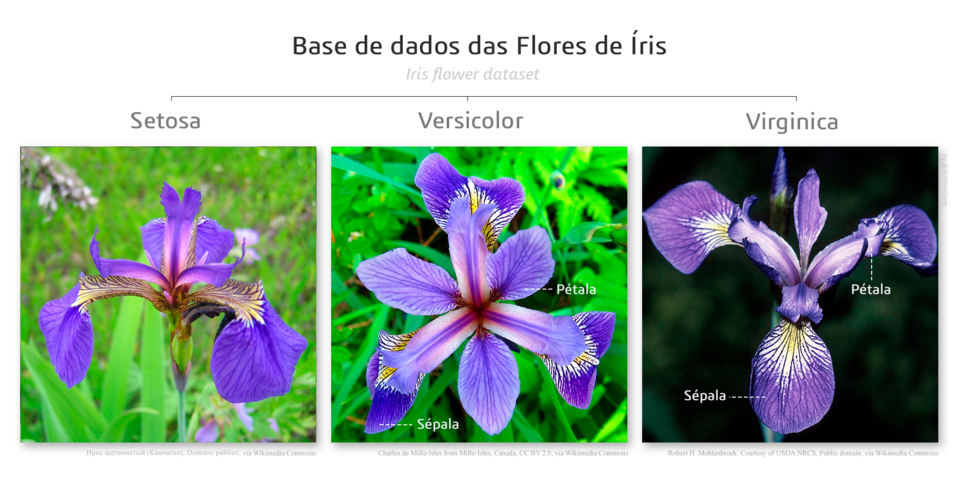
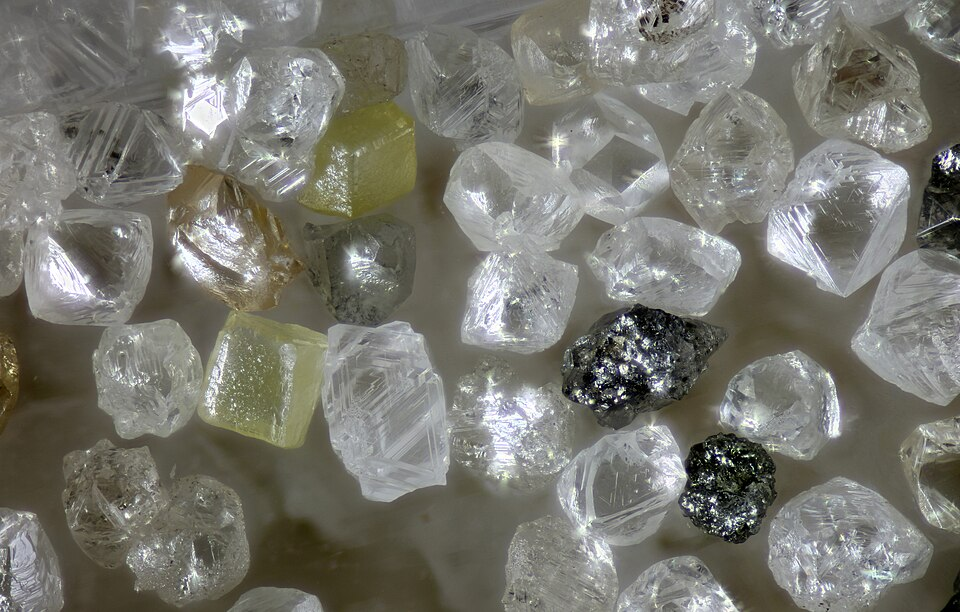
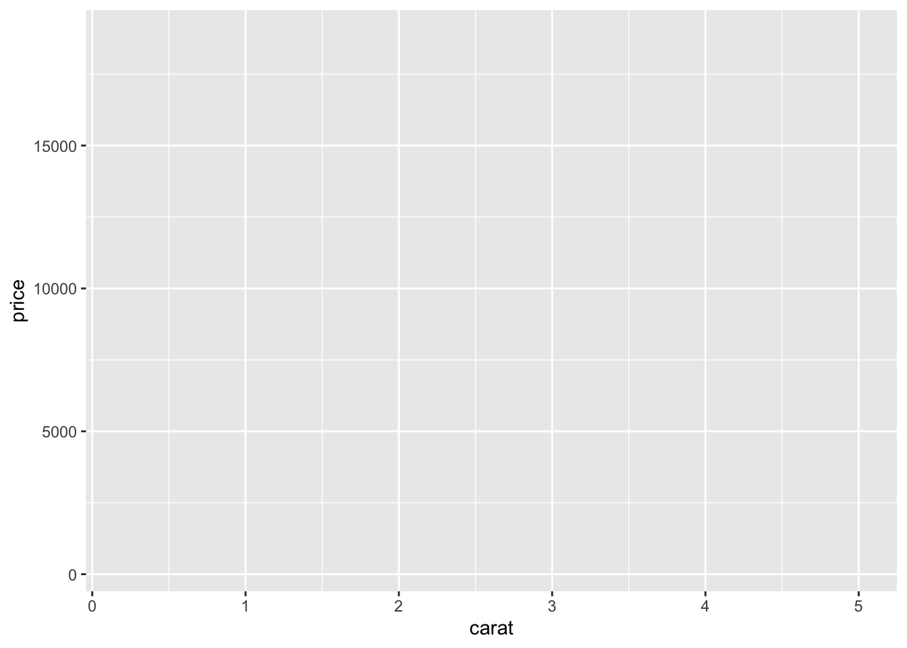
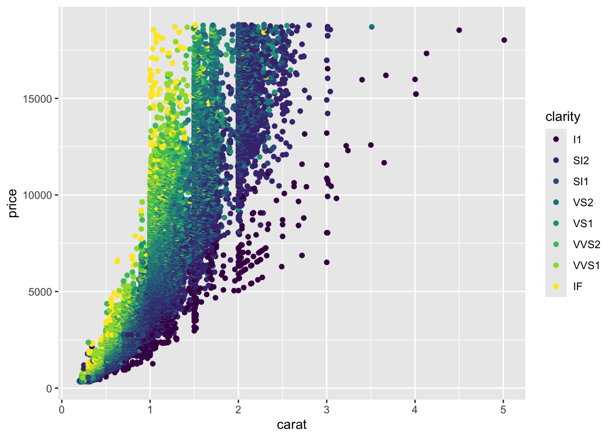
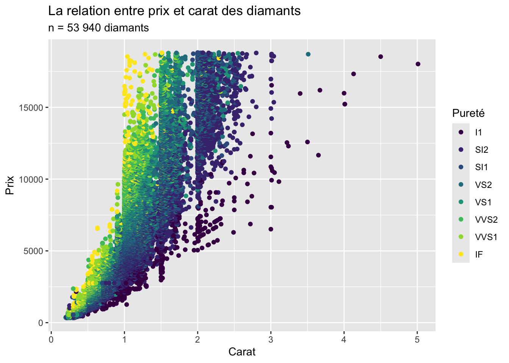

# install.packages('tidyverse')
# install.packages('ggthemes')
library(tidyverse)
library(ggthemes)4 Paquets, jeux de données et premiers graphiques
La session 4 a pour but d’introduire trois éléments fondamentaux en analyse de données avec R :
- Installer et charger des paquets R sur son ordinateur
- Utiliser des jeux de données intégrés en R pour s’entraîner en analyse de données
- Apprendre à utiliser le paquet ggplot2 pour créer des visualisations de données
4.1 Les paquets R
NoteÀ noter
Dans la programmation R, un paquet (angl. package) est un ensemble de fonctions, de données et de code compilé dans un format bien défini.
Les paquets étendent les fonctionnalités de R de base en fournissant des outils supplémentaires pour l’analyse des données, la visualisation, l’apprentissage automatique, la modélisation statistique et beaucoup d’autres applications spécialisées.
Les paquets R peuvent être développés par n’importe qui et partagés gratuitement avec d’autres (open source). Par conséquent, une grande multitude de paquets R sont disponibles.
Notez que la plupart des paquets R doit être installé séparément, normalement depuis le site Comprehensive R Archive Network (CRAN). Dans ce cours, nous nous concentrerons sur deux paquets célèbres :
ggplot2pour créer des visualisations de données (Wickham, 2016)dplyrpour manipuler les jeux de données (Wickham et al., 2026)
Tous deux font partie du tidyverse, une collection de paquets conçus pour la science des données (Wickham et al., 2019). Nous utiliserons également le paquet suivant :
ggthemespour augmenter le design des graphiques (Arnold, 2026)
Pour utiliser un paquet R sur votre ordinateur, il faut :
- D’abord installer le paquet en question avec la fonction
install.packages(). Cela peut durer quelques minutes. - Ensuite activer le paquet avec la fonction
library().
AstuceAstuce
Dans RStudio, on peut aussi installer les paquets via l’onglet Tools et le menu déroulant : Cliquez sur Install Packages… et cherchez les paquets que vous voulez installer.
Utilisez le code suivant pour installer les paquets R requis pour notre cours. Enlevez les croisillons, exécutez le code avec install.packages() puis réajouter les croisillons pour éviter de réinstaller les paquets chaque fois que vous exécutez le code dans votre script ! Activer ensuite les paquets avec library().
À noter : ggplot2 et dplyr sont installés avec le tidyverse, il ne faut donc plus les installer séparément.
ImportantImportant
Notez qu’une fois installé, vous n’avez pas besoin de le réinstaller les paquets à chaque fois avec install.packages(). Cependant, vous devez activer tous les paquets R que vous voulez utiliser dans une session avec la commande library(). Sans activation, vous allez recevoir des messages d’erreur.
Certains paquets ont des documentations auxquelles vous pouvez accéder grâce au point d’interrogation. Ces infos sont affichées dans le volet Output sous l’onglet Help.
?ggplot2?dplyr
En ligne, vous pouvez également trouver de nombreuses ressources qui expliquent en détail les fonctionnalités des différents paquets R et vous renvoient vers d’autres livres, tutoriels, cours, etc., p. ex. :
Vous pouvez vérifier quels paquets sont actuellement installés sur votre ordinateur avec la fonction installed.packages() (vous pouvez laisser vide l’espace entre parenthèses) :
installed.packages()4.2 Les jeux de données intégrés
Une excellente façon, et probablement la plus efficace, d’apprendre à utiliser R pour l’analyse de données consiste à travailler avec des jeux de données intégrés dans R.
Ces jeux de données exemplaires présentent deux avantages principaux.
- Il est facile d’y accéder et de les charger dans votre session RStudio, car ils sont intégrés à R et à certains de ses paquets.
Cela les distingue fortement des données du “monde réel”, comme les données de questionnaires ou de médias sociaux, qu’il faut souvent d’abord nettoyer et formater, puis importer dans RStudio sous forme de fichiers externes. Avec les jeux de données intégrés, vous pouvez immédiatement commencer l’analyse et la visualisation des données.
- Ces jeux de données ont prouvé leur utilité dans d’innombrables supports d’apprentissage.
Par conséquent, vous pouvez facilement trouver des ressources supplémentaires et des exemples de code à leur sujet.
Dans ce qui suit, nous allons explorer trois jeux de données classiques de ce type :
irisetmtcars, fournis avec R ;diamonds, fourni avec le paquetggplot2(Wickham, 2016).
Nous verrons un quatrième jeu de données, penguins (paquet palmerpenguins ; Horst et al. (2020)), en session 12.
AstuceAstuce
Vous pouvez afficher les jeux de données qui sont actuellement accessibles sur votre ordinateur avec la commande data().
Le jeu de données iris
Le jeu de données iris est un ensemble de données célèbre qui contient les mesures en centimètres des variables longueur et largeur du sépale, ainsi que longueur et largeur du pétale, pour trois espèces de fleurs d’iris (Setosa, Virginica et Versicolor). Il y a 150 observations en total (50 pour chaque espèce).
Le jeu de données a été rendu célèbre par le statisticien et biologiste britannique Ronald Fisher dans un article scientifique de 1936 qui avait beaucoup d’influence dans le domaine des statistiques (Fisher, 1936). Les mesures ont été publiées par le botaniste Edgar Anderson (1935) ; deux des trois espèces proviennent de la péninsule de Gaspé (Québec, Canada).
Mise en gardePlus sur Ronald Fisher
Ronald Fisher (1890-1962) était un statisticien, généticien et biologiste britannique qui a joué un rôle crucial dans le développement de la science statistique moderne. Il est connu pour son travail dans le développement des fondements des méthodes statistiques, incluant l’analyse de variance (ANOVA), le test exact de Fisher et l’estimation du maximum likelihood. Fisher a également apporté des contributions significatives en génétique, où son travail sur la théorie de la sélection naturelle et la génétique des populations a aidé à combler le fossé entre la génétique mendélienne et l’évolution darwinienne. Il est considéré comme l’un des architectes principaux de la synthèse néo-darwinienne. Son influence s’étend au-delà de la statistique et de la génétique aux domaines plus larges de la biologie et de la recherche agricole, faisant de lui une figure clé de la science du 20e siècle.


Dans l’apprentissage de R, ce jeu de données est souvent utilisé pour illustrer diverses techniques d’analyse de données, y compris le clustering, la classification et la visualisation.
Explorons un peu le jeu de données iris avec du code !
dim(iris) # Ceci affiche le nombre de lignes et de colonnes)
head(iris) # Affiche les six premières lignes
str(iris) # Informations sur la structure du jeu de données
names(iris) # Affiche les noms des colonnesRegardons ce que ça donne après l’exécution de chaque ligne de code :
dim(iris)[1] 150 5head(iris) Sepal.Length Sepal.Width Petal.Length Petal.Width Species
1 5.1 3.5 1.4 0.2 setosa
2 4.9 3.0 1.4 0.2 setosa
3 4.7 3.2 1.3 0.2 setosa
4 4.6 3.1 1.5 0.2 setosa
5 5.0 3.6 1.4 0.2 setosa
6 5.4 3.9 1.7 0.4 setosastr(iris)'data.frame': 150 obs. of 5 variables:
$ Sepal.Length: num 5.1 4.9 4.7 4.6 5 5.4 4.6 5 4.4 4.9 ...
$ Sepal.Width : num 3.5 3 3.2 3.1 3.6 3.9 3.4 3.4 2.9 3.1 ...
$ Petal.Length: num 1.4 1.4 1.3 1.5 1.4 1.7 1.4 1.5 1.4 1.5 ...
$ Petal.Width : num 0.2 0.2 0.2 0.2 0.2 0.4 0.3 0.2 0.2 0.1 ...
$ Species : Factor w/ 3 levels "setosa","versicolor",..: 1 1 1 1 1 1 1 1 1 1 ...names(iris)[1] "Sepal.Length" "Sepal.Width" "Petal.Length" "Petal.Width" "Species"
AstuceAstuce
Vous pouvez consulter la documentation pour beaucoup de jeux de données avec un point d’interrogation : ?iris().
Le jeu de données mtcars
Utilisez le script suivant pour analyser mtcars (lisez également la documentation avec ?mtcars) ! Les données proviennent de Henderson & Velleman (1981).
# Chargez le jeu de données mtcars. Il devrait apparaître
# dans l'environnement
data(mtcars)
# Affichez mtcars
mtcars
# vous pouvez explorer mtcars manuellement en double
# cliquant dessus dans l'environnement
# Affichez seulement les six premières observations
head(mtcars)
# Affichez seulement les six dernières observations
tail(mtcars)
# Appliquez quelques autres commandes pour explorer ce jeu
# de données
class(mtcars)
dim(mtcars)
str(mtcars)
summary(mtcars)
glimpse(mtcars) # cette commande marche seulement si vous avez activé le tidyverse
# Extraire la colonne mpg ('miles per gallon') avec le
# signe $ et calculer la moyenne, la médianne, le minimum
# et le maximum
mtcars$mpg
mean(mtcars$mpg)
median(mtcars$mpg)
min(mtcars$mpg)
max(mtcars$mpg)_L_2-door_sedan_(20538771443).jpg){kind=link}
Le jeu de données diamonds
C’est maintenant à vous d’explorer ce jeu de données avec du code !
Utilisez également ?diamonds() !


4.3 Introduction aux visualisations avec ggplot2
NoteÀ noter
ggplot2, qui fait partie du tidyverse, est un paquet de visualisation de données très populaire dans R. Il a été conçu pour faciliter la création de graphiques complexes et multicouches avec une syntaxe cohérente et consistante nommée grammar of graphics.
Le « gg » de ggplot2 signifie grammar of graphics (français : grammaire des graphiques ; Wilkinson, 2005), une théorie que Hadley Wickham a implémentée dans R ; le « 2 » distingue le paquet de sa première version, ggplot.
Avec ggplot2, les utilisateurs peuvent construire des graphiques de manière incrémentale en ajoutant des couches, ce qui le rend flexible pour une large gamme de besoins graphiques. Cela permet de créer des visualisations hautement personnalisables et esthétiquement attrayantes, allant de simples diagrammes de dispersion à des figures multi-panneaux complexes.
Le tableau suivant décrit les couches d’un graphique ggplot :
| Couche | Description/Variables | Obligatoire ? |
|---|---|---|
| data | le jeu de données que nous voulons visualiser | oui |
| aesthetics | le mapping de nos variables : axes x et y, color, fill, alpha, line width, etc. | oui |
| geometries | le type visuel du graphique : point, line, histogram, bar, boxplot | oui |
| themes | Le design du graphique | non |
| Autres couches optionnelles : facets, statistics, coordinates | Pour des visualisations plus complexes | non |
Pour comprendre comment cela fonctionne, voici un exemple de code dans lequel les différentes couches d’un graphique ggplot sont ajoutées étape par étape dans la fonction ggplot(). (Normalement, nous ne procéderions pas ainsi, mais utiliserions directement le code en entier pour créer le graphique).
Le but dans cet exemple est de visualiser le jeu de données diamonds pour comprendre la relation entre les variables price (prix) et carat (poids) des diamants dans le jeu de données !
NoteÀ noter
Important : avant d’analyser un ensemble de données, il faut toujours acquérir des connaissances contextuelles sur ce que les données représentent.
Dans notre exemple, il s’agit de diamants. Dans le monde des diamants, il est important de comprendre qu’il existe quatre critères de qualité qui déterminent la valeur (donc le prix) d’un diamant. Ce sont les suivants :
La taille (angl. cut)
La pureté (clarity)
La couleur (color)
Le poids en carats (carat)
En anglais, on parle donc aussi des 4C. Le jeu de données diamonds contient précisément ces variables.
# La première couche, data, définit le jeu de données
ggplot(data = diamonds)
Notre graphique n’est pour l’instant qu’une zone grise ! Catastrophe ? Bien sûr que non 😀. Nous devons maintenant définir les autres paramètres de la fonction ggplot() !
# La deuxième couche, aesthetics, définit le mapping de nos
# variables sur les axes y et x
ggplot(data = diamonds, mapping = aes(x = carat, y = price))
La zone grise a maintenant reçu des unités pour ses axes x (carat) et y (price). Mais il n’y a toujours pas de données affichées !
# La troisième couche, geometries, définit le type visuel
# de notre graphique
ggplot(data = diamonds, mapping = aes(x = carat, y = price)) +
geom_point()
Ouf, si vous avez exécuté le dernier code, vous avez maintenant 53 940 points de données affichées dans votre graphique ! Car il y a tant d’observations dans le jeu de données diamonds.
Bon courage si vous avez un vieil ordinateur, cela peut prendre un certain temps avant que R ne produise le graphique…
Mais jetons un coup d’œil au graphique. Qu’est-ce qui saute aux yeux, pouvez-vous déjà identifier des tendances ?
# On peut maintenant encore optimiser notre graphique
ggplot(data = diamonds, mapping = aes(x = carat, y = price, color = clarity)) +
geom_point()
Vous avez remarqué ce qui a changé dans le code ?
# Ajoutons encore une couche optionnelle mais utile au
# graphique : labs() nous permet d'ajouter et de
# personnaliser des titres, sout-titres, titre d'axes,
# titres de légendes, etc. !
ggplot(data = diamonds, mapping = aes(x = carat, y = price, color = clarity)) +
geom_point() + labs(title = "La relation entre prix et carat des diamants",
subtitle = "n = 53 940 diamants", y = "Prix", x = "Carat",
colour = "Pureté")
Maintenant il s’agit d’interpréter le graphique. Que nous dit-il sur la relation entre prix et carats des diamants ? Quel rôle joue la variable pureté (clarity)?
À faire avant de continuer
Exécutez toutes les sections de code de la session 4 sur votre ordinateur.
Entraînez-vous à ouvrir un nouveau script R, à définir un répertoire de travail et à enregistrer le script dans un dossier sur votre ordinateur.
Assurez-vous que le paquet R
tidyverseest installé correctement sur votre ordinateur.Utilisez le code R de manière autonome pour explorer le jeu de données
diamonds. Vous devez être en mesure de comprendre et d’expliquer comment il est structuré (nombre d’observations n, unité statistique, variables, origine des données, etc).
Exercices
Choisissez Vrai ou Faux, cochez une réponse ou tapez un nombre : la couleur indique tout de suite si votre réponse est correcte. Cliquez sur Explication pour voir la correction.
Question 4.1
Jugez chaque proposition :
Le paquet
ggplot2est inclus danstidyverse.Le paquet
ggplotest à utiliser pour faire des graphiques avec une variable, tandis que le paquetggplot2est utile pour voir graphiquement la corrélation entre deux variables.Le responsable de
ggplot2(qui maintient le paquet) est Thomas Lin Pedersen.ggplot2est très utile pour modifier des données.ggplot2construit des graphiques de manière incrémentale, en travaillant avec des couches.
a) ggplot2 fait partie des paquets chargés par library(tidyverse).
b) Il n’existe pas de paquet ggplot distinct : ggplot() est la fonction principale de ggplot2.
c) packageDescription("ggplot2")$Maintainer l’indique.
d) Pour modifier des données, on utilise dplyr ; ggplot2 sert à les visualiser.
e) On ajoute les couches les unes aux autres avec +.
Question 4.2
Jugez chaque proposition relative au jeu de données iris, intégré à R :
Le jeu de données contient 150 observations de 5 variables.
Le jeu de données contient des observations de trois espèces d’iris différentes.
L’unité statistique du jeu de données est
Petal.Length(longueur de pétale) des fleurs d’iris.Les mesures ont été publiées par Edgar Anderson (1935).
a) dim(iris) renvoie 150 5.
b) levels(iris$Species) : setosa, versicolor et virginica.
c) L’unité statistique est une fleur ; Petal.Length est une variable.
d) La page d’aide ?iris cite Anderson (1935), The irises of the Gaspe Peninsula. 1935 est l’année de publication ; selon Anderson, deux des trois espèces proviennent de la péninsule de Gaspé (Québec).
Question 4.3
Jugez chaque proposition relative au jeu de données mtcars, intégré à R :
mtcarsest un"data.frame".Le jeu de données
mtcarscontient 32 observations de 11 variables.Avec 33,9 milles par gallon (
mpg), la Toyota Corolla est le modèle de voiture le plus efficace en termes de consommation de carburant dans le jeu de données.La Ford Pantera L a une boîte de vitesses manuelle.
a) et b) class(mtcars) renvoie "data.frame" et dim(mtcars) renvoie 32 11.
c) mtcars[which.max(mtcars$mpg), ] donne la Toyota Corolla (33,9 mpg).
d) mtcars["Ford Pantera L", "am"] vaut 1, ce qui signifie « manuelle » (voir ?mtcars).
Question 4.4
Jugez chaque proposition concernant le graphique suivant :

Le graphique montre différents niveaux de qualité de la couleur des diamants.
En moyenne, la relation entre le carat et le prix semble linéaire (le prix et le carat augmentent proportionnellement).
En moyenne, la relation entre le carat et le prix semble exponentielle (le prix augmente plus vite que le carat).
À carat égal, les diamants plus purs semblent plus chers dans ce graphique.
Le diamant le plus lourd est aussi le plus cher.
a) Les couleurs du graphique représentent la pureté (clarity), pas la couleur des diamants (color).
b) et c) Le nuage de points s’incurve vers le haut : le prix augmente plus vite que le carat.
d) Pour un même carat, les points des puretés élevées se situent plus haut. Parmi les diamants d’environ 1 carat, le prix médian passe de 2 808 USD (I1) à 9 764 USD (IF).
e) Le diamant le plus lourd (5,01 carats) coûte 18 018 USD, alors que le plus cher coûte 18 823 USD.
Question 4.5
Jugez chaque proposition concernant les couches d’un graphique ggplot2 (Data, Aesthetics, Geometries, Facets, Statistics, Coordinates, Theme) :
Pour créer un graphique ggplot2, il faut toujours définir les paramètres de toutes les couches les unes après les autres.
La couche Geometries définit le type de graphique (par ex. nuage de points, diagramme à barres, boîtes à moustaches, etc.).
En général, on construit un graphique ggplot2 par couches en commençant par la couche Data.
La couche Aesthetics définit le design du graphique (par exemple, elle permet de générer le graphique dans le design du Wall Street Journal ou du magazine The Economist).
Les couches Facets, Statistics, Coordinates et Theme ne doivent pas obligatoirement être spécifiées dans le code, car R utilise pour celles-ci des paramètres standard prédéfinis.
a) et e) Seules Data, Aesthetics et Geometries sont nécessaires ; les autres couches ont des valeurs par défaut.
c) On commence par ggplot(data = ...), puis on ajoute les couches.
d) Aesthetics (aes()) relie les variables aux axes, couleurs, tailles, etc. Le style « WSJ » ou « Economist » relève de la couche Theme (p. ex. theme_wsj() du paquet ggthemes).
Question 4.6
Quel est le prix en USD du diamant le moins cher du jeu de données diamonds ? (Donnez seulement la valeur numérique.)
Réponse :
min(diamonds$price)Question 4.7
Quelle est la longueur du pétale le plus court du jeu de données iris ? (Donnez seulement la valeur numérique.)
Réponse :
min(iris$Petal.Length)Question 4.8
Combien de chevaux-vapeur (gross horsepower, variable hp) a la Chrysler Imperial dans le jeu de données mtcars ?
Réponse :
Les noms des voitures sont les noms de lignes de mtcars :
mtcars["Chrysler Imperial", "hp"]Question 4.9
Le code R suivant charge le paquet tidyverse pour la session R en cours, à condition que ce paquet ait été préalablement installé sur votre ordinateur :
library(tidyverse)Un paquet s’installe une fois avec install.packages("tidyverse"), puis se charge à chaque session avec library(tidyverse). Si le paquet n’est pas installé, library() renvoie une erreur.
Question 4.10
ggplot2 est un paquet R qui fait partie du tidyverse.
tidyverse::tidyverse_packages() liste les paquets du tidyverse ; ggplot2 en fait partie.
Question 4.11
ggthemes est un paquet R qui fait partie du tidyverse.
ggthemes complète ggplot2 avec des thèmes supplémentaires, mais il ne fait pas partie du tidyverse : il faut l’installer et le charger séparément.
Question 4.12
Le tidyverse, contraction de tidy et de universe, est une collection de paquets R (R packages) open source.
library(tidyverse) charge d’un coup plusieurs paquets conçus pour fonctionner ensemble, dont ggplot2, dplyr, tidyr et readr.